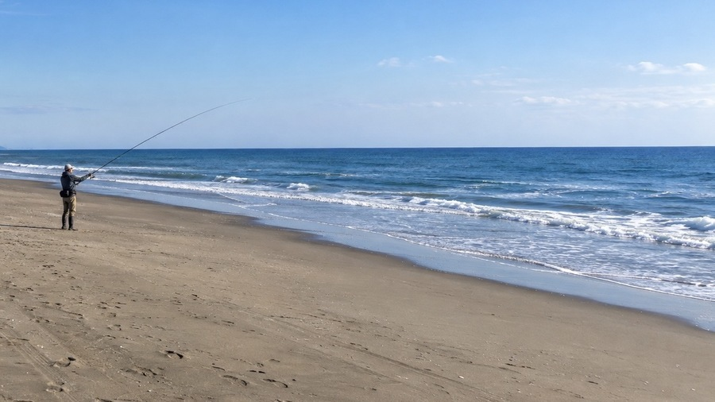
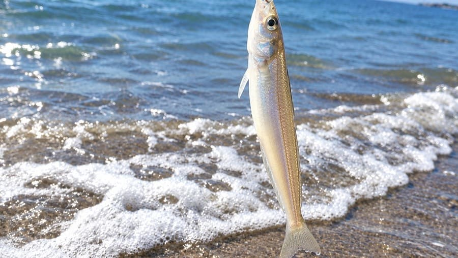
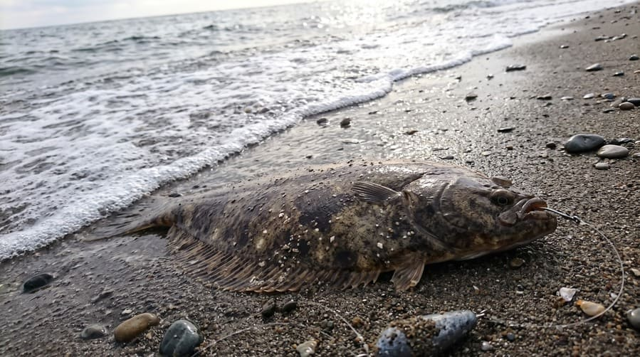

砂浜の投げ釣り入門｜シロギス・カレイの仕掛けと釣れるポイントの見つけ方

広い砂浜から沖へ仕掛けを投げ、海底に潜む魚を狙う投げ釣り。足場がよく、釣り座も限られないため、初心者が最初に挑戦しやすい釣りのひとつです。主役は暖かい季節のシロギスと、秋から冬に人気の高まるカレイ。同じ砂底の魚でも、釣り方は「探す」と「待つ」で大きく変わります。この記事では砂浜ならではの釣り方の違いと海底の読み方に絞って解説します。生態やタックルの詳細は、各魚種の記事もあわせてご覧ください。
1. 砂浜の投げ釣りは「探す」と「待つ」
砂底にはゴカイ類や小型の甲殻類が暮らしていて、これをエサにするシロギスやカレイが集まってきます。ただ砂浜は広い分、魚がどこにいるのか分からないのが難しいところ。そこで釣り方は大きく2つに分かれます。
- 引き釣り（シロギス向き）：投げたらオモリを海底に沿ってゆっくり引き、群れの居場所を探ります。距離や方向を変えて広範囲を探れるのが強みです。
- 置き竿（カレイ向き）：地形の変化や実績のある場所に仕掛けを置き、じっくりアタリを待ちます。
シロギスを置き竿で狙うことも、カレイを誘うこともできますが、最初は「シロギスは引く、カレイは置く」と覚えると整理しやすいでしょう。
考え方の違いをまとめると、シロギスは「群れの位置と距離」を探す釣り、カレイは「仕掛けを置く場所とタイミング」を見極める釣りです。なおカレイの接岸時期は地域や種類で異なり、秋から冬に好機を迎える地域が多いものの、全国一律ではありません。
2. エサは細身のジャリメが基本
定番はジャリメ（石ゴカイ）。細身で小さなハリにも付けやすく、どちらの魚にも使えます。
竿は、近距離を狙うチョイ投げなら扱いやすい短めの竿や汎用タックルでも始められます。遠投が必要な本格仕様の投げ竿は、慣れてから検討しても遅くありません。
テンビンは、底を引く釣りならL型、根掛かりが気になる場所ならジェットテンビンが選択肢。向き不向きは海底の状態次第です。
シロギスは「小さく・自然に」

ジャリメをハリに沿わせる通し刺しにし、ハリ先を出してタラシは1cm程度に。仕掛けは市販のシロギス用で十分で、最初はハリ数の少ないものが絡みにくく扱いやすくなります。反応が悪ければ、タラシを少し長くして動きで誘ってみましょう。カレイは「大きく・目立たせる」

ハリとハリスが大きめの市販カレイ仕掛けに、ジャリメを数本まとめる房掛けが有効です。アオイソメやイワイソメの併用もあります。ただし小魚のアタリばかり出るときは、エサの量を減らすのも手です。3. 砂浜の海底を読む3つの方法
平坦に見える砂浜でも、海底には波と流れでできた斜面や溝があります。カケアガリやヨブの特徴は魚種別の記事に任せ、ここでは砂浜で見つける方法を紹介します。
- オモリで探る：最初はエサなしでオモリだけを引くと、斜面や底質の違いが手元の抵抗として伝わります。ただし重くなる場所が必ずヨブとは限らず、海藻や貝殻でも変わるため、同じコースを何度か通して確かめましょう。斜面らしき場所を見つけたら位置を覚え、同じ場所へ投げ直して、斜面の上・下・途中を探り分けると魚の付き場を絞れます。
- 払い出しを見る：波が引いて沖へ戻る流れのこと。泡の動きや波の崩れ方で見つけられ、砂が削れて溝ができやすい場所です。ただし、あれば必ず釣れるわけではありません。
- 波打ち際の形を見る：砂浜が張り出した場所と引っ込んだ場所では、沖の地形が違うことがあります。波の崩れ方や泡の流れにも違いが出ますが、風や波で見え方は変わるため、あくまで目安にとどめ、仕掛けの感触と照らし合わせて判断します。
沖へ強く流れる払い出しは、離岸流（リップカレント）の可能性があります。流れがあるからと波打ち際へ近づいたり、海へ入ったりするのは厳禁。強い流れや高波の日は釣りを避け、安全な位置から海況を観察し、釣果より安全を優先してください。
4. 距離と方向を変えて魚を探す
一投で釣れなくても、すぐに移動する必要はありません。投げ分けながら魚の居場所を絞り込みます。
- 沖から手前へ：まず沖を探り、反応がなければ少しずつ手前へ。シロギスは波打ち際近くまで寄ることもあるので、遠投だけにこだわらないことが大切です。
- 同じ距離で左右へ：投げる方向が変わると、かけ上がりや溝を通る位置も変わります。一投ごとに少しずつ角度を変えてみましょう。
- アタリを再現する：釣れた距離と方向を覚え、同じ場所へ投げ直します。色分けされた道糸なら、何色付近で出たかが目印になります。カレイも同じです。
続けてアタリがあれば群れがいる可能性大。一度きりなら群れが移動したのかもしれません。
アタリが出たら
シロギスは大きく竿をあおらず、糸をたるませないよう一定の速度で巻き上げます。慣れるまでは、複数掛けを狙うより1匹ずつ確実に取り込むことを意識しましょう。カレイは小さな反応ですぐに合わせず、魚の重みが伝わってから落ち着いて巻きます。一定時間アタリがなければエサの残り具合を確かめ、むやみに遠投を繰り返さず、地形や実績を手掛かりに投入点を調整します。
5. 本命以外も楽しい砂浜の外道
砂浜の投げ釣りでは、釣り場の水深や底質、季節によってさまざまな魚が掛かります。代表的な顔ぶれを紹介します。
- イシモチ（シログチ）：砂泥底や河口周辺で釣れ、シロギスより大型になることも。塩焼きや蒸し料理で親しまれます。呼び名には地域差があります。
- セイゴ：スズキの若魚。河口付近や小魚が集まる場所で思いがけず掛かり、強く走ることがあるので糸をたるませず慎重に寄せます。
- メゴチ・ヒイラギ：どちらもシロギス仕掛けによく混じる小型の魚。ぬめりが強く、メゴチには鋭い部分もあるため、魚つかみがあると安全です。
- ハゼ類：河口や汽水域に近い砂浜で多く、河川の流れ込みがある場所は狙ってみる価値があります。
- アナゴ：夜釣りや河口周辺で釣れ、置き竿との相性が良い魚。仕掛けに絡みつくため、プライヤーが役立ちます。
ヒラメやマゴチも掛かることはありますが、虫エサでは狙いにくい魚。本格的に狙うなら泳がせ釣りやルアーが向いています。
6. 釣果を伸ばす4つの工夫
- エサをこまめに確認：ジャリメは弱ると魚へのアピールが落ちます。アタリがなくても、時間を決めてエサの状態とハリ先が出ているかをチェックしましょう。
- 引く速度を変える：シロギス狙いの基本はゆっくり引くことですが、速ければよいわけではありません。反応がなければ速度を変えたり、途中で止めたりして探ります。
- 置き竿でも誘いを入れる：カレイ狙いでも、竿をゆっくり動かしてエサの位置を少しずらすと気付かせやすくなります。動かしすぎて狙いの場所から外れないよう注意。
- 波と潮を観察する：波が穏やかな日は仕掛けが扱いやすく、地形も読みやすくなります。逆に波が強い日は仕掛けが流され、底の感触も分かりにくくなります。無理は禁物です。
7. 砂浜ならではの準備と安全
- 竿立てを使う：竿やリールに砂が入ると故障の原因に。砂の上に直接置かないようにします。置き竿で複数本出すときは、仕掛けが絡まないよう投入方向も分けましょう。
- キャスト前に周囲を確認：後方や左右に人がいないかを必ず見ます。散歩する人や海水浴客がいる場所では特に注意。
- 装備を整える：ライフジャケットと滑りにくい履物は必須。ハサミ、プライヤー、魚つかみ、エサ箱、クーラーボックスも用意しましょう。
- 最初は扱いやすいタックルで：竿やオモリの適合範囲を超える無理な投げ方は、破損や仕掛けの飛散につながります。まずはチョイ投げで感覚をつかみましょう。
📍 関東の生息・釣果スポット
※マップ上の赤いドットが釣れるポイントです。